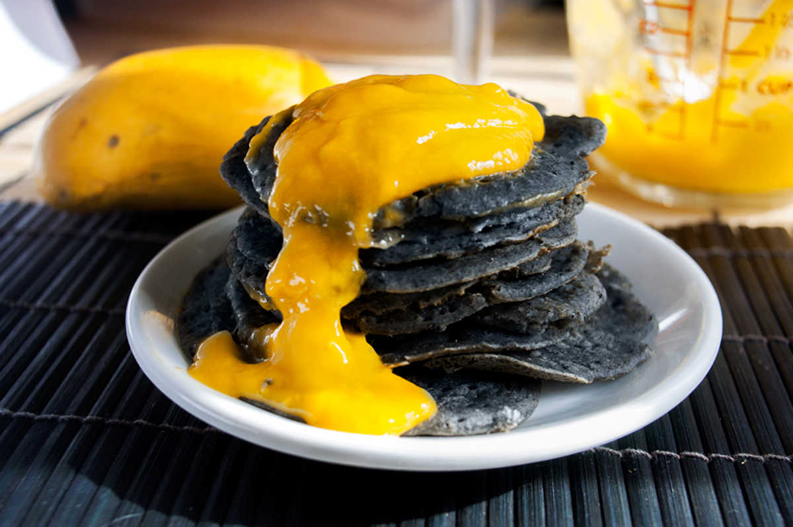

black sesame rice pancakes
12 servings — 20 minutes
Black sesame rice pancakes, for those who share our love of sesame.
Photo is with a generous dollop of mango, because sometimes we need a break from maple syrup—okay, no we don't, but here's something different anyway. The real reason we added mango, was because we enjoy the contrast in color. Most times, we top our pancakes with maple syrup.
Substitutions: For matcha pancakes, omit the black sesame seeds and add matcha powder.
 soy milk300 ml
soy milk300 ml apple cider vinegar30 ml
apple cider vinegar30 ml rice flour130 g
rice flour130 g black sesame seeds35 g
black sesame seeds35 g salt1.25 g
salt1.25 g
pancakes
- Measure 300 ml (1 1/4 cups) of soy milk, add 30 ml (2 tbsp) of apple cider vinegar. Let sit for 5 minutes.
- Heat 35 g (1/4 cup) of black sesame seeds, in a non-stick pan at medium heat. Remove once they start to pop. Let cool, then crush into a powder with a mortar and pestle or immersion blender.
- Mix the soured soy milk with 5 ml (1 tsp) of vanilla extract and the ground black sesame seeds. Blend until you get a smooth grey liquid.
- In another bowl, mix 130 g (1 cup) of rice flour, 1.25 g (1/4 tsp) of salt together.
- Pour wet ingredients into the dry ones, and mix until smooth. Make it as lump-free as you can.
- Heat up non-stick pan at medium heat, add 15 ml (1 tbsp) of canola oil. Spoon about 60 ml (1/4 cup) of batter into the pan. Flip once the bottoms have browned, and little bubbles appear at the top.
- Repeat for the rest of the pancake mix.